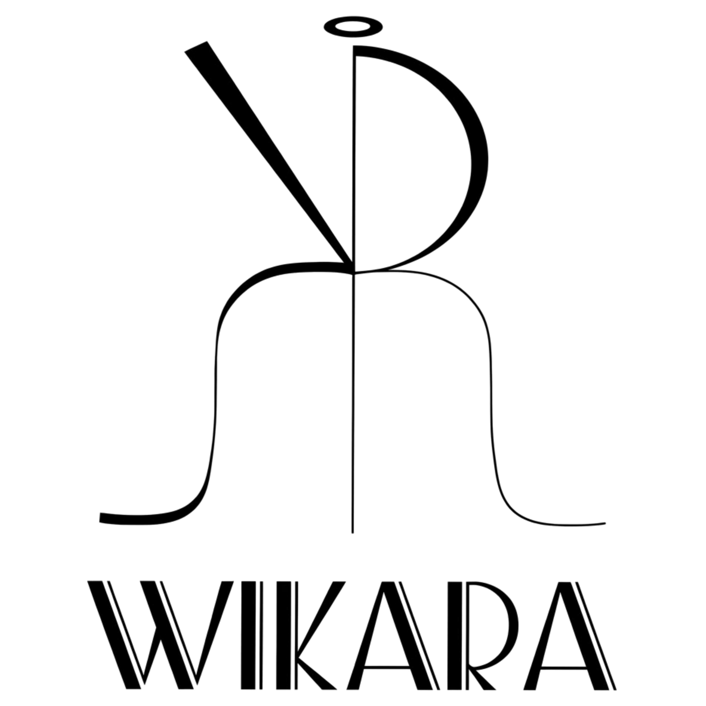

Visit Our Sanctuary
Buka di Google Maps
Lokasi & Jadwal
Alamat Restoran
Jl. Komp. Perum Lapan No.30 Blk C, RT.6/RW.4, Sukamulya, Kec. Rumpin, Kabupaten Bogor, Jawa Barat 16350
Jam Operasional Outlet
Setiap Hari
10:00 – 20:00 WIB
Pesan Antar
Setiap Hari
12:00 – 16:00 WIB